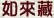

為三乘菩提之所依，若離如來藏心體及其含藏之一切種子，即無三界有情及一切世間法，亦無二乘菩提緣起性空之出世間法；本經詳說無始無明、一念無明皆依如來藏而有之正理，藉著詳解煩惱障與所知障間之關係，令學人深入了知二乘菩提與佛菩提相異之妙理；聞後即可了知佛菩提之殊勝處及三乘修道之方向與原理，邁向攝受正法而速成佛道的境界中。
平實導師講述，共六輯，每輯約三百餘頁。
平實導師，於甲申（1944）年出生於台灣中部小鎮農家。世代務農，祖父以耕讀持家，父、祖皆為三寶弟子。13歲喪母，初識無常。少時即好打坐及方外之術，亦習金石、拳術、古文、針灸等。自小厭惡迷信，每斥神造世人之說，不信神能造人。
兵役期滿後辭父離鄉，於台北市覓職；五年後成立事務所，執行業務；雖游於世務，而樂於暗助弱小。
歷練世間法18年後，於1985年皈依三寶，鼎力護法，勤修福德。自修持名念佛，精進二年之後自成無相念佛功夫。
1988年，平實導師應邀在許居士家中佛堂開始講說基本佛法，先講五蘊、十八界法之緣起性空、四聖諦、十二因緣等阿含基本佛法，以《阿含經》中所說佛法為說法的主要內容。
1989年初，平實導師轉進而改修體究念佛──參禪。從此開始常常住於「見山不是山」的境界中。十月初隨聖嚴法師前往天竺，作為期15天的朝禮聖地之旅，而中斷說法度眾之事。返國後，鑒於長時處於參禪狀態之「見山非山」境界中，不便繼續說法而暫停講課；並立即結束事務所業務，專心參禪。
因參禪始終沒有結果，後來 觀世音菩薩開示：「開悟哪有那麼簡單？心肝那麼沒閒！」（台語）所以1990年11月，平實導師中止了原來在某道場的許多義工事務，於家中開始閉關，摒絕一切外緣，專心苦參19天後，在第19天下午，終於驪龍頷下得珠──明心並且眼見佛性──發明智慧；因為無人可以印證故，嗣即深入經藏，以三乘法義印證無訛；不久又經 佛之召見，說明此世、往世因緣，給與印證。
有鑒於末法時期外道猖獗橫行於佛門中，正法日漸衰微，遂發悲勇，誓願度眾，隨即應允以前追隨 導師修學者之請求，乃於1991年仲夏復出弘法度眾。但因 平實導師以如來藏作為證悟之內容，各大山頭則皆同以意識離念靈知心，作為證悟之內容；各大山頭因為與 平實導師的法義不同故，竟謗為「不如法、邪魔外道、法義有毒」，聯合起來私下抵制如來藏正法，令如來藏正法難以永續弘傳。為免正法被如是常見外道法所取代，為護正法，平實導師毅然揭竿而作獅子吼，開始效法 玄奘菩薩之方式，以破斥邪說之方法來顯示正法的不同所在；如是弘傳了義正法，獨自面對諸方錯悟大師、各大道場之龐大勢力而無所畏懼。平易近人的 平實導師，卻作了這種大異常人的弘法志業。
但是這個涅槃的一味、等味、解脫味，印順怎麼說呢？來看看他的說法：【從此三德的平等，顯得大般涅槃的常住究竟，所以《大般涅槃經》說：涅槃是三德祕藏。】我們再來看看楷書的第七點中，我怎麼評論他的說法：「只有從如來藏的本自解脫、本來涅槃、本自清淨，方可說是究竟涅槃，方可說大般涅槃是常住而且究竟的，方可說涅槃是三德祕藏；若是二乘將滅止生的方便涅槃，便不可說二乘涅槃是三德祕藏了。」
因為如來藏是本來解脫、本來清淨、本來涅槃，而這個法於一切眾生、於十方法界一切國土中都是如此，不會有任何一個眾生的如來藏是後來才清淨、後來才解脫、後來才涅槃，都是本來就清淨涅槃的。可是印順所說的解脫道（成佛之道）以及所證的涅槃，是要在捨報之時把名色滅盡的，滅盡以後剩下的如來藏在哪裡呢？他並不知道。他又不知道如來藏本身即是涅槃，不懂涅槃是依如來藏而施設的，他現觀不到。所以印順既沒有般若德，也沒有解脫德，更沒有法身德。他那個涅槃將來必然是斷滅空，因為他捨壽後已經不在了、斷滅了，而剩下他的如來藏在哪裡呢？他始終都沒有去碰觸到，又公開把第八識如來藏否定，所以他的涅槃見解落入斷滅空中；正是將滅止生，不是本來就不生，這在《六祖壇經》中早就斥責過了。
想要把名色滅盡，未來世中不再出生而叫作無生，是二乘法；未來世不再出生了，這樣說為無生，也是沒有錯；但那個無生是將滅止生，是用滅掉自己來停止未來世再生，由於未來不再受生、出生，所以稱為無生。問題是菩薩所證的涅槃，是本來不生，不是滅了以後才不生的，這與二乘法有著很大的不同。本來就不生所以未來就不會滅，而阿羅漢的法是把有生的名色滅除，滅除以後變成未來不生而叫作無生，那是以滅來停止生，是滅掉名色而不再有生。可是菩薩所證的是本來就無生，無始以來就沒有出生過，那就不會有滅，是名色仍然存在時就已經不生了，所以菩薩證的是本來不生。
本來不生這個法，阿羅漢看不見；可是菩薩從所有的有情身上——上自諸佛下至地獄的痛苦有情——都現前這樣看見，都是本來無生，這才叫作涅槃一味。菩薩也預見阿羅漢、辟支佛將來入了涅槃以後，他們都不在了，但他們的如來藏還是繼續無生；這樣的無生當然也無滅，無生無滅就是涅槃。在菩薩看來，三乘聖人的涅槃都是平等的、都是一味的，所有有情的涅槃都是如此。二乘人入了無餘涅槃以後無生了，但他們的涅槃還是依本來就涅槃的如來藏而施設的涅槃，不是因為滅掉他們的五蘊才說有涅槃，所以菩薩看待一切聖者所證的涅槃時，都是平等的。不是從滅掉五蘊而說涅槃是平等的，因為二乘聖人滅掉五蘊以後，總不能夠把滅掉五蘊後的斷滅空叫作涅槃吧！否則涅槃怎麼能被佛稱為常住不變？
可是如今印順自己說「涅槃是常住的」，卻又說阿羅漢五蘊名色滅盡以後是涅槃，而沒有留下第八識如來藏常住不壞，那他的涅槃顯然還是斷滅見的臆想，不是實證的。他為了補救這個過失，所以又發明一個創見（真是他的創見）；他說名色滅盡了以後，那個滅相不會再滅了，所以叫作真如，所以涅槃是常住。如果這樣說得通，哪一天有因緣遇見他，我就把他身上的衣服都扒光燒掉了說：「你的衣服現在是常住涅槃，同意不同意？」我要問他同意或不同意。如果衣服是身外之物，不算數！「好，那我把您印順的名色毀滅掉，再放一把火把您燒了，然後再用一陣強風把您的骨灰吹散，那您這個名色的滅相就永遠不會再被任何人消滅了，您就永住於真如境界中了！」他一定不肯接受他自己講的這種真如。
可惜的是，他已經無法跟我對話，因為他已在中陰了，不久就會往生投胎或到別處去了。若是他的中陰身還在，我會對他的中陰身講：「您還有中陰在，所以您仍然沒有實證涅槃。」讓他無法以二乘涅槃來自處，教他無法回答，灰頭土臉！但是我會再告訴他：「您目前中陰現前時，當下也是涅槃的。請問您的涅槃在哪裡？您還沒有現觀，但是我卻現觀您在中陰境界也是涅槃，而您以前活著時也是涅槃；您若立刻去投胎了，入母胎去了，您已經不在了，還是一樣涅槃。」他仍然將是聽得一頭霧水、茫無頭緒。
地獄眾生受苦無量時一樣也是涅槃，與阿羅漢所不知的本來涅槃是完全一樣的；這樣的涅槃才是真的一味、等味，因為都是解脫味。本來就解脫的，當然是涅槃。所以印順所說的滅相不滅即是真如，問題是滅相到底是真實法還是虛妄法？其實滅相只是意識心中生起的一個概念而已，只是意識心中的一個觀念；當意識滅了以後，這個滅相的觀念還能存在嗎？已經不存在了，斷滅了。可是真實的涅槃，當名色滅了以後，祂還是在，祂繼續涅槃，仍然是真實法，這樣才能夠說涅槃是一味、是等味、是解脫味。所以二乘法的涅槃不能夠說是有三德祕藏的，因為是將滅止生，不是實相法。將滅止生的變異法，絕對不是究竟涅槃，因為連涅槃的實際都觀察不到。涅槃的實際若觀察不到，怎能知道三德的義理呢？
譬如法身德，既然沒有證得法身，怎能有法身德？般若德，是依如來藏為諸法的法身、為法界的實相，是依如來藏而有無量的中道義，這樣來稱說般若智慧。可是印順既然沒有證得如來藏，怎能有般若智慧？怎能說他有般若德？解脫德，說句不客氣的話，他完全沒有證解脫，連二乘解脫都無法稍稍證得，何況大乘解脫？因為大乘法中的證解脫，是要現觀涅槃實際的；而二乘聖人是把自己滅掉以後，自己消滅而不存在了才叫作解脫，那其實是方便說解脫，不是正確的、究竟的解脫。因為二乘聖人已經滅掉自己了，自己不在了，有什麼解脫可說呢？菩薩卻不是，菩薩是現前觀見自己仍在輪迴中，但是也看見自己住在如來藏中，而如來藏已經是解脫的，所以自己是住在解脫中、住在涅槃中的。
菩薩這樣看：我再怎麼輪迴，都是解脫的。因為解脫是現前可以觀見的，現前可以體驗的，也可以在同樣證得解脫的人之間，互相可以溝通討論，而且永遠是法同一味，這樣才叫作大乘法中的真解脫，真正的解脫德是這樣實證與現觀的。而阿羅漢死前，沒有看見自己解脫在何處，他只知道自己滅了以後沒有生死痛苦而有解脫；可是他自己滅了以後，解脫又在哪裡？還是不知道。那這樣看來，他有沒有證解脫呢？說句老實話，他並沒有住在解脫境界中，所以從實際理地來看，阿羅漢仍然未證解脫。
請問：二乘涅槃的解脫，既沒有法身德，也沒有般若德，也沒有究竟的解脫德，請問他們的三德祕藏在哪裡？「在呀！就是他們的如來藏。」問題是他們都沒有證。所以你證得如來藏以後，聽我說這個法，心裡一定這樣想：真過癮！可是阿羅漢、辟支佛聽了，可真是苦惱無狀、煩惱萬端，那是因為他們沒有三德祕藏。三德的祕密藏就是如來藏，只要證得如來藏了，三德的祕藏你就把握在手裡了。只有這樣，才能叫作常住的涅槃。二乘聖人將滅止生的涅槃法，從來都不知道解脫中的境界，怎麼能夠說他們有三德祕藏？因此印順以滅止生，將滅相真如認作涅槃的說法是絕對錯誤。
【「世尊！若無明住地不斷不究竟者，不得一味、等味，謂明解脫味；何以故？無明住地不斷不究竟者，過恒沙等所應斷法不斷不究竟；過恒沙等所應斷法不斷故，過恒沙等法應得不得、應證不證，是故無明住地積聚，生一切修道斷煩惱、上煩惱；彼生心上煩惱、止上煩惱、觀上煩惱、禪上煩惱、正受上煩惱、方便上煩惱、智上煩惱、果上煩惱、得上煩惱、力上煩惱、無畏上煩惱。如是過恒沙等上煩惱，如來菩提智所斷，一切皆依無明住地之所建立。」】
講記：勝鬘夫人說得很快，我們卻講得很慢，因為想要讓大家確實瞭解她所說的真義。勝鬘夫人說得很深，而且講得很簡略。當年她講的時候是面對佛前所說的，當然只說綱要，不必說到很微細；而且當時人的根性也很好，容易聽懂。但是今天佛法已經被藏密的應成派中觀亂七八糟的妄自解釋，已經變成烏煙瘴氣的時候，我們就必須要講得微細一點，讓大家確實瞭解勝鬘夫人的真正意思。當我們把佛法明礬投入濁水裡面，想要把它澄清時，他們卻說是我們把佛教界搞得烏煙瘴氣。他們以前把佛法全面錯說的烏煙瘴氣卻都不說，而那些弄不懂是誰把佛法弄成烏煙瘴氣的初學者，也跟著那些人一起來誣責我們。所以說，人的明與無明之間的差別是非常大的。
勝鬘夫人在這裡講了明解脫味，我們來看勝鬘夫人是怎麼說的。她說：「世尊！假使無明住地不斷除，或者是斷除而沒有究竟的話，就沒有辦法得到一味、等味，也就是明解脫味。」我們先來談談這幾句。
無明住地講的是無始無明，而四住地煩惱叫作一念無明。為什麼會叫作ㄧ念無明呢？因為它是三界中的生死法——與三界生死有關的煩惱。可是明明是四種的住地無明，為什麼要稱為一念無明？我們舉個例來說，譬如斷我見以後的初果人還住在欲界中，他再度受生時仍然無法離開欲界境界；乃至他修斷五蓋而進修初禪，在還沒有發起初禪以前，縱使已經很努力在遠離五蓋了，最多也只能進入薄地，是薄貪瞋癡的二果人。
這時已經是斷我見以後的事了，但他的一念無明還是沒有完全消除掉；因為四住地煩惱中的欲界愛、色界愛、無色界愛等三種住地都還存在；也就是說他的思惑還沒有斷除，所以當他在斷我見的基礎上修得了初禪，遠離欲界愛而成為三果人了，他有可能是生般涅槃，或者有行般涅槃，或者是上流乃至處處般涅槃。當他生到色界天而不再來生於人間了，可是他生到色界天以後，假使是無行般涅槃，他在初禪天中一生無所事事，只要打坐就好了；每天靜坐之後，到了壽盡時還是會生起一念；一念生起了，覺知心又接觸到色界法了，那時捨報就斷盡思惑而取涅槃；但在捨報前仍然會再生起一念，這都是由於思惑尚未斷盡才會生起的一念，所以名為一念無明。
但如果是一個普通人，當他修得四無色定，捨報後生到無色界天；假使不中夭，在空無邊處一萬大劫，或者在非非想處八萬大劫，於捨壽前都是一念不生的。可是非想非非想天人八萬大劫後，突然生起一念時就退回無所有處了，隨即下墮於人間或旁生道去了。就只是這麼一個念頭動了心，而這個念頭是什麼？連他自己都不知道呢！為什麼會這樣？正是因為他的我慢沒有斷，也就是由於對自我的存在而覺得有價值，喜樂於自我的存在，就是我慢；就因為這個我慢的緣故，於是生起一念就下墮了。人間修得四空定的人如此，修得色界四禪的人也是如此；在得四禪八定以後，生到色界、無色界天的人們，也都是不離這一念的。由於這一念妄起，因此就下墮了！在下墮前及下墮後，都是仍然在四住地無明之中；這都是由於見惑與思惑尚未斷盡的緣故，所以見惑與思惑所攝的這四種住地無明，就簡稱為一念無明。